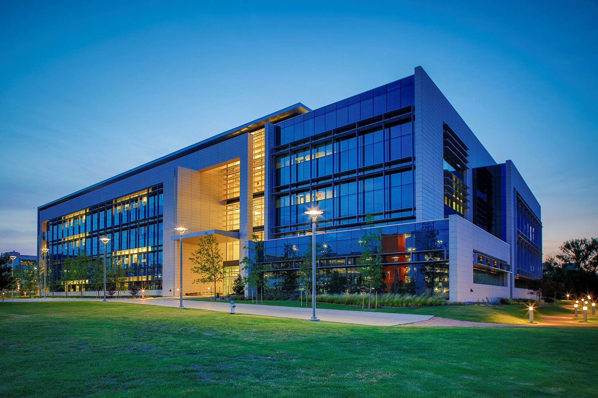
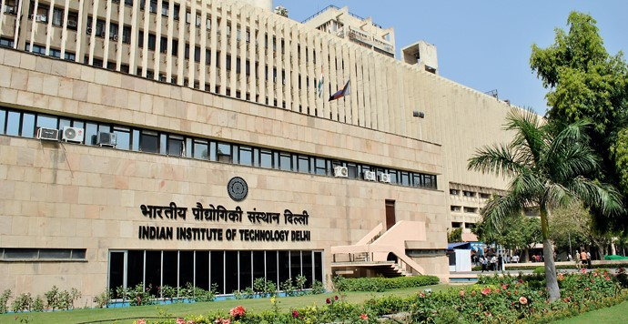
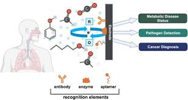
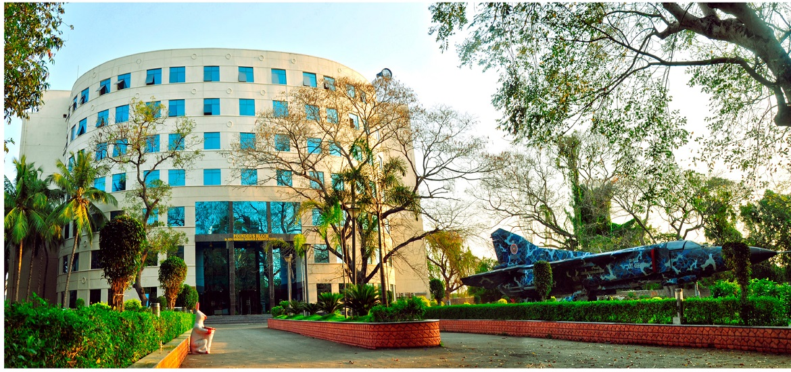

Experience & Education
Jan 2023 - Present
PhD Candidate & Research Fellow - Bioengineering
The University of Texas at Dallas, Richardson, Texas, USA
- Developed an intelligent multiplexed electrochemical impedance spectroscopy (EIS) biosensor for simultaneous detection of antibiotics and pesticides in complex food matrices.
- Validated sensor performance across chicken, shrimp, milk, salad, and agricultural soil run-off using spike-and-recovery and reproducibility studies.
- Designed and fabricated sensors using screen-printing techniques and executed the full electrochemical testing and validation pipeline.
- Developed nano-scale assays for detecting pathogens, pesticides, toxins, and antibiotics.
- PhD GPA: 4.0 / 4.0.

Jan 2022 - Dec 2022
Junior Research Fellow
Indian Institute of Technology Delhi, India
- Contributed to the Nano-electronics Network for Research and Application (NNetRA) program.
- Investigated non-silicon-based nano-fabrication technologies and nano-scale device applications.
- Designed and developed microfluidic lab-on-a-chip nanobiosensors for detection of emerging viral pathogens.

Jun 2019 - Oct 2021
Research Associate
Virtual Sense Global Technologies, Pune, India
- Conducted research on molecular diabetic biomarkers in human breath.
- Functionalized multiwalled carbon nanotubes (MWCNTs) with COOH, OH, and NH3 groups using distillation and vacuum filtration methods.
- Applied a peroxidase enzyme-based approach to improve biosensor specificity.
- Designed circuit and sensing setups for gas sensing experiments and calibrated commercial humidity, CO2, and gas sensors to mimic in-vivo conditions.
- Modelled and prototyped sensing systems using 3D printing and supported clinical trials from hypothesis development to data analysis.

Aug 2018 - Nov 2018
Teaching Assistant
Indian Institute of Technology Ropar, India
- Assisted Prof. Brajesh Rawat in delivering undergraduate coursework for Introduction to Medical Products in the Electrical Department.

2017 - 2019
M.Tech in Biomedical Engineering
Indian Institute of Technology Ropar, India
CGPA: 7.58 / 10
2010 - 2014
B.E. in Electronics and Instrumentation
Hindustan Institute of Technology and Science, Chennai, India
CGPA: 8.44 / 10
